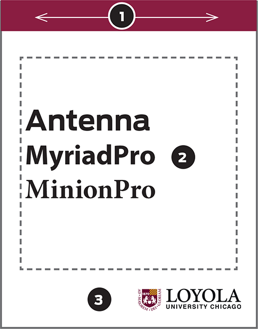
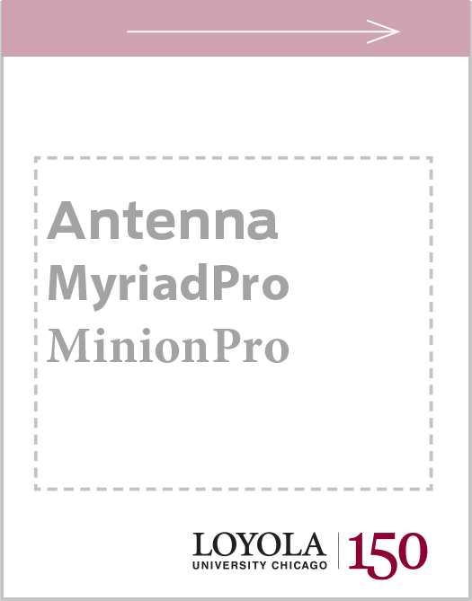
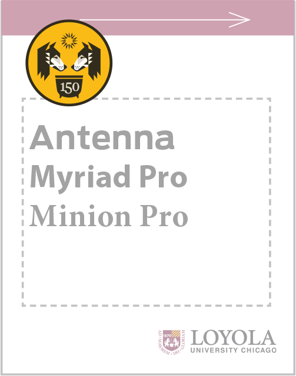
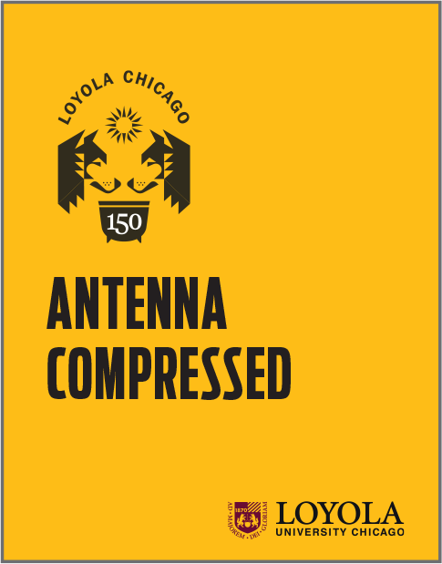

Using the Identity System
Build on existing brand approach
Anniversary artwork works within Loyola's existing brand. The anniversary mark is designed to supplement current materials and thought processes, which rely on a unified approach to our communication, regardless of channel

Loyola's basic communication approach
- Inform viewers of the source of information quickly, leaning into maroon as the primary identity color.
- Employ consistent typography across all Loyola channels.
- We are one University, with one mark. Use the lockup to footprint pages.
For a fuller explanation of University brand guidelines, consult our Style Guide.
Reflect the 150th Anniversary

Replace an existing lockup with the Loyola 150 wordmark
- The Loyola 150 wordmark may be used on official University communication, including email signatures, presentations, etc.
- Do not apply to materials that could extend beyond May 2021, including letterhead, business cards, signs, etc.

Add primary mark for 150th Celebration communication
- Add the anniversary mark in the upper left for communication about non-signature events.
- Retain an existing Loyola lockup to identify Loyola University Chicago. (Remove the tagline to maximize impact of the celebration logo.)

Signature Series
- The 150th Anniversary Committee determines criteria for key commemorative events.
- UMC will guide communication and visual direction of materials, which will rely on bolder use of gold, Antenna, and 150th artwork.